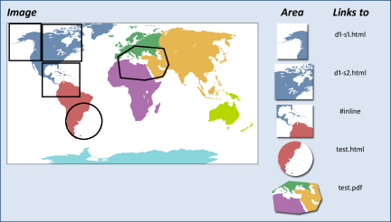

<imagemap>
The <imagemap> element supports the basic
functionality of the HTML "client-side" image map markup.
<imagemap> allows you to designate a linkable area or
region over an image, allowing a link in that region to display another topic.
An HTML client-side image map binds an image to the navigation
structure (the "map") by means of an ID association from the map to the image.
In contrast, the DITA version of <imagemap> markup
simply includes the target image as the first required element in the markup,
followed by a sequence of <area> elements that represent
the links associated with the contained image.
An <imagemap> structure can be output either to a standard HTML image
map or to alternative forms of navigation (such as table-based image maps). When
output as PDF, the minimal form would be to represent at least the image; advanced
PDF output processors should provide equivalent region-oriented hyperlinks.
The <xref> content within
<area> contains the intended alternative text or hover
text for that image map area.
Content models
See appendix for information about this element in OASIS document type shells.
Inheritance
+ topic/fig ut-d/imagemap
Example
<imagemap> looks like this (note that
the rendering will depend on how this markup is supported for particular output
formats):
<imagemap>
<image href="imagemapworld.jpg">
<alt>Map of the world showing 5 areas</alt>
</image>
<area><shape>rect</shape><coords>2,0,53,59</coords>
<xref href="d1-s1.dita">Section 1 alternative text</xref>
</area>
<area><shape>rect</shape><coords>54,1,117,60</coords>
<xref href="d1-s2.dita"><!-- Pull title from d1-s2.dita --></xref>
</area>
<area><shape>rect</shape><coords>54,62,114,116</coords>
<xref href="#inline" type="topic">Alternative text for this rectangle</xref>
</area>
<area><shape>circle</shape><coords>120,154,29</coords>
<xref format="html" href="test.html">Link to a test html file</xref>
</area>
<area><shape>poly</shape>
<coords>246,39,200,35,173,52,177,86,215,90,245,84,254,65</coords>
<xref format="pdf" href="test.pdf">Link to a test PDF file</xref>
</area>
</imagemap>
The values for use in the <shape> and
<coords> elements follow the guidelines defined for
image maps in HTML 4.1,
Client-side image maps: the MAP and AREA elements
Attributes
The following attributes are available on this element: Universal attribute group, Display attribute group, outputclass, and spectitle.